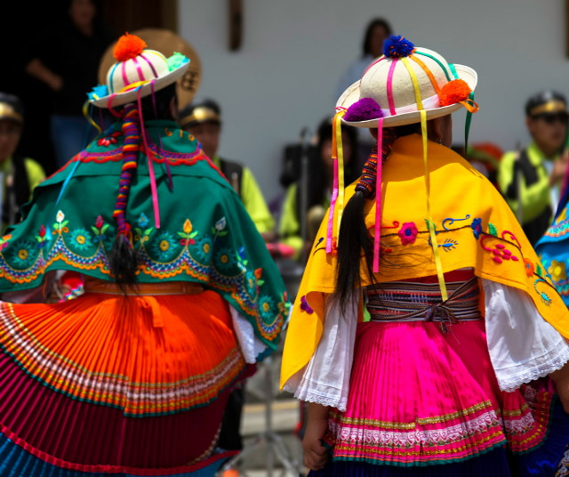
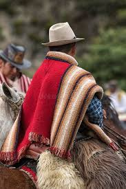
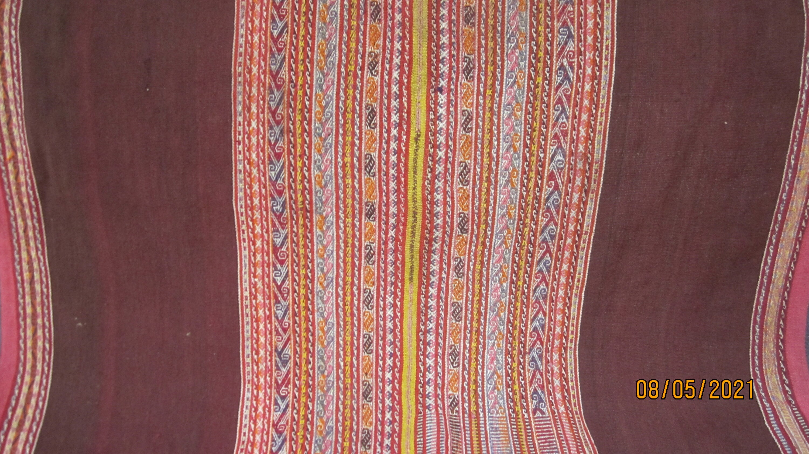
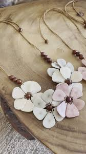

Fashion in Ecuador is more than just clothing—it's a powerful expression of cultural identity. The country's diverse Indigenous communities each have their own styles, shaped by centuries of tradition and environmental influences. Clothing is often handmade using natural fibers and dyes derived from local plants. One standout material is tagua, known as “vegetable ivory,” which symbolizes Ecuador’s creativity and commitment to sustainability.
During the Spanish colonial period, European fashion was introduced and slowly fused with Indigenous styles, giving rise to a rich mestizo tradition. The resulting garments are not only beautiful but tell a story of resistance, resilience, and identity. Today, Ecuadorian fashion continues to evolve, balancing heritage and innovation.
Traditional Clothing

Poncho: A poncho is a traditional garment worn in many parts of Ecuador, especially by the Indigenous people of the Andes region. It's made from wool and is usually woven by hand. The poncho is square-shaped with a hole in the middle for the head to go through. It is worn to protect from cold weather, especially in the highlands where it gets very chilly. The wool is often dyed using natural dyes from plants and other materials found in the environment. The poncho is not just a piece of clothing; it is also a symbol of identity and pride for many Ecuadorians, especially for the Indigenous groups. Different patterns and colors in the fabric can represent a person’s community, family, or region.

Manta: A manta is a traditional shawl or large piece of cloth worn by Indigenous Ecuadorian women, especially in the highland areas. It is usually made from wool or cotton, and like the poncho, it is often handwoven. The manta is worn over the shoulders and fastened with a pin or brooch in the front. It is usually colorful and can be embroidered with beautiful patterns, including flowers, animals, or geometric designs. These designs often have personal and cultural significance. The manta is not only practical for keeping warm but is also an important part of a woman’s daily life and cultural identity. For example, it can be used to carry things, like children or goods, on the back, or it can serve as a part of traditional ceremonies and celebrations. The manta also has a deeper meaning as a symbol of femininity, tradition, and connection to the land. It is primarily worn by Indigenous women in areas like Otavalo and Cotacachi.

Tagua:Tagua is a special material made from the seeds of the tagua palm, also known as vegetable ivory. It is often carved into jewelry, buttons, and decorative items. The tagua seed is very hard and looks like ivory, but it is completely natural and sustainable, which makes it an important eco-friendly material. The process of turning tagua seeds into items involves drying and carving the seeds, then polishing them to give them a smooth and shiny finish. Tagua is sometimes dyed to make colorful accessories. It has become an important material for making Ecuadorian jewelry, including necklaces, bracelets, and earrings. The use of tagua has grown because it helps provide economic opportunities for local artisans, especially in the coastal regions of Ecuador. Tagua is often associated with Ecuador’s Indigenous groups, who use it in traditional crafts, but it has also become popular among designers around the world for its beauty and environmental benefits.